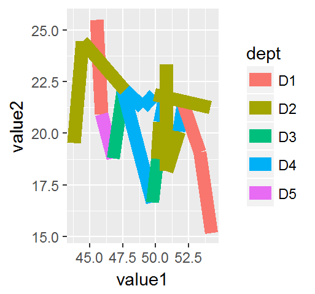
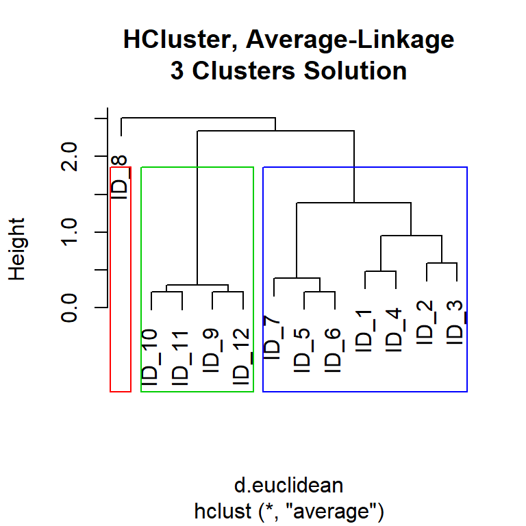
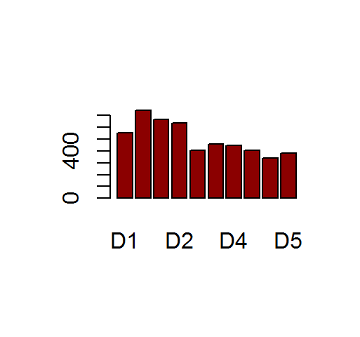

8.7 Hierarchical Clustering
- Hierarchical clustering is a widely used data analysis tool
- The idea is to build a binary tree of the data that successively merges similar groups of points
- Number of clusters (K) is required as import
- It is an unsupervised learning
8.7.1 Clustering Algorithm
This is how Hierarchical Clustering works:
1. Initially, put each data point in its own cluster
2. Calucate the distances between each cluster and all other clusters (inter-cluster distance)
3. Combine the two clusters with the smallest distance - This reduce cluster number by one
4. Repeat step (2) and (3) until all clusters have been merged into single cluster
8.7.2 Inter Cluster Distance Method
Once distance for all data points has been measured, decide which of the five (5) methods below to measure distance between clusters:
- Single Linkage:
Shortest distance among all data points betweentwo clusters
- Complete Linkage (common):
Longest distance among all data points between two clusters
- Average Linkage (common):
Average distance of all points between two clusters - Centroid:
Find the centroid of each cluster and calculate the distance between centroids between two clusters
Please note that the Inter Cluster Distance Method above uses Distance Algorithmn such as ‘euclidean’, “maximum”, “manhattan”, “canberra”, “binary” or “minkowski” to calculate actual distance value.
8.7.3 Run The Code
Generally, step (A), (B) and (C) are followed for H-clustering analysis.
A. Before running H-Clustering
- Fiter Data (choose only numeric columns)
- Scale Data (if required)
- Calculate distance, using
B. Performing H-Clustering
- Build H-Cluster model, require input of inter-cluster distance method
- Derive cluster by **cutting* into K number of clusters
C. Visualize
- Display frequency, number of observations for each cluster group
- Plot dendrogram, superimpose cluster group into the plot
8.7.3.1 Using Base-R Utilities
hclust (d, method ='complete')
\(\quad\)d = distance calculated using dist()
\(\quad\)method = 'single', 'complete', 'average', 'centroid' as cluster distance method
Filter, Scale, Calculate Distance
data.scaled = scale(my.df[,3:4]) # scale data
d.euclidean = dist( data.scaled ) # calculate distanceBuild H-Cluster Model, Cutting into clusters
fit.average = hclust (d.euclidean, method='average') # build the model
clusters = cutree (fit.average, k=3) # derive the clusters
clusters
## ID_1 ID_2 ID_3 ID_4 ID_5 ID_6 ID_7 ID_8 ID_9 ID_10 ID_11 ID_12
## 1 1 1 1 2 2 2 2 2 2 3 3
## ID_13 ID_14 ID_15
## 3 3 3Display frequency table, Visualize with dendogram, superimpose cluster group
barplot( table(clusters), xlab='Cluster Group Number', ylab='No. of Observations' )
plot( fit.average, main='HCluster, Average-Linkage\n3 Clusters Solution' )
rect.hclust( fit.average, k=3, border = 2:5 )
8.7.3.2 Using factoextra Package
factoextra provides single function hcut to scale, calcuate distance and cutting into cluster groups. Which is handy.
library("factoextra")
hcut(x, k = 2, hc_method = "ward.D2", hc_metric = "euclidean", stand = FALSE, graph = FALSE)
\(\quad\)x = matrix or dataframe
\(\quad\)k = number of clusters to cut
\(\quad\)hc_method = inter-cluster distance method: ward.D, ward.D2, single, complete, average
\(\quad\)hc_metric = distance calc method: euclidean, manhattan, maximum, canberra, binary, "minkowski
\(\quad\)stand = TRUE: scale x with z-score, FALSE: not to scale x
hcut output below useful values (not all displayed):
\(\quad\)
data = original data (if stand=FALSE), scaled data (if stand=TRUE)
\(\quad\)nbclust = number of clusters
\(\quad\)cluster = cluster group number assigned for each observation
\(\quad\)size = frequency vector, number of observations for each cluster
\(\quad\)method = inter-cluster distance method applied
\(\quad\)dist.method = distance method applied
Filter, Scale, Calculate Distance, Build H-Cluster Model, Cutting into Clusters
fit.hc = hcut(my.df[,3:4], k=3, hc_method='average', hc_metric='euclidean', stand = TRUE)Display frequency table, Visualize with dendogram, superimpose cluster group
barplot( table(fit.hc$cluster), xlab='Cluster Group Number', ylab='No. of Observations' )
fviz_dend(fit.hc, rect = TRUE, rect_border = 'red', cex = 0.5, lower_rect = -0.5, horiz = T)